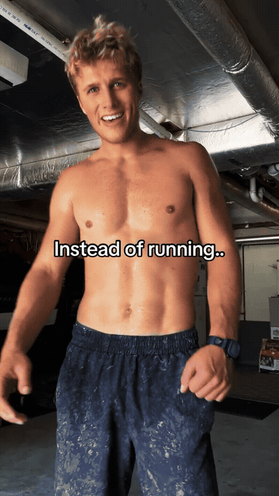
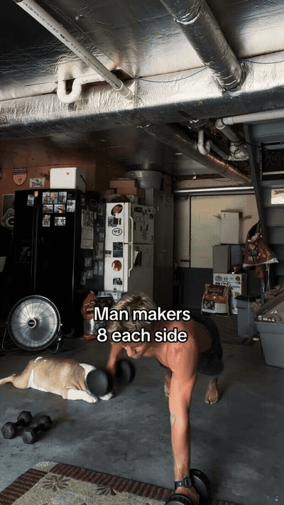
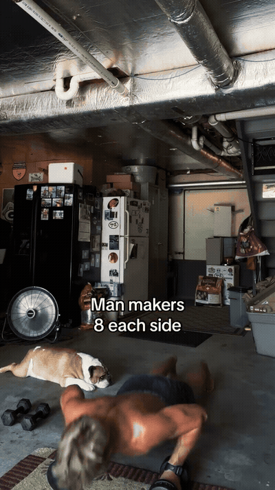
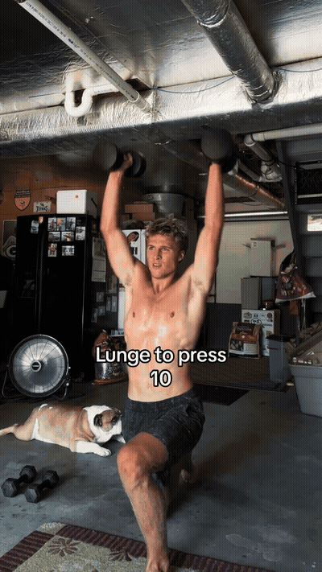
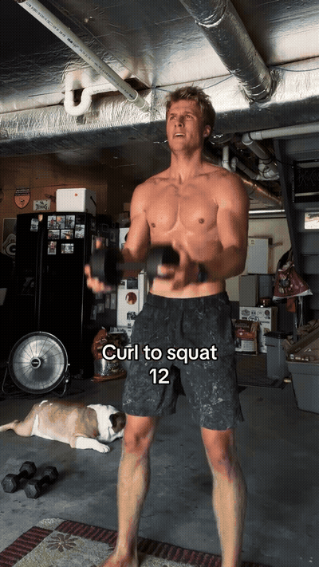

The source opens with a man-maker pattern combining a plank position and a dumbbell-driven full-body transition. Use the stated eight reps each side, but reduce the load or step the feet rather than losing trunk position.

Step into a lunge and finish with an overhead press. Keep the front foot stable and press only through a range that leaves the ribs and pelvis controlled.

Combine a dumbbell curl with a squat. Treat the curl and squat as one controlled pattern rather than rushing the arm action while descending.

The squat-ski pattern adds a rhythmic conditioning element to the circuit. Keep the squat shallow enough to maintain balance and let the arms follow the lower-body rhythm without swinging the weights aggressively.

From a plank, pull the dumbbell across the body while resisting rotation. Widen the feet or perform the movement from the knees as a regression; the source does not prescribe rounds or rest.